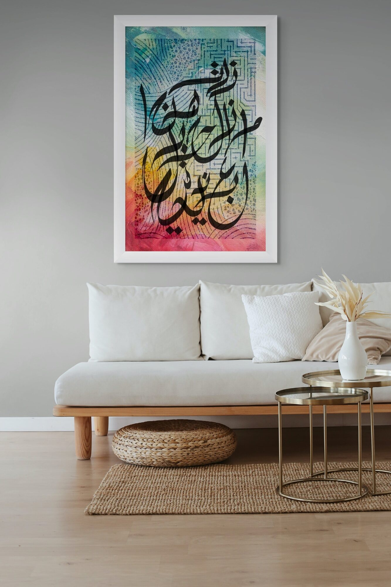

ما زلت هنا — ومازال حبك رغم كل شيء يعنيني
I am still here — and your love, despite everything, still matters to me.
الأرزة · The Cedar

This poem is structured like a day. It begins with a morning instruction the speaker gives himself — forget her, she has forgotten you. It does not work. He lives the day anyway, with her ghost and the wounds, and by evening his defenses have collapsed and only one thing is still standing: loyalty. Not to her. To what he said. To what he promised. To the stubborn heart that still means what it meant.
The Arabic word يعنيني is doing everything in the final verse. It does not mean love — it means matters, concerns, is meaningful to. It is quieter than love and more honest. After a full day of trying to forget, after the evening defeat, what he sends from his silent phone is not a declaration. It is a confession of relevance. You still matter. That is all. That is everything.
The Cedar is the national symbol of Lebanon — the tree that does not break, that survives altitude and storm, that remains. The title is not decorative. This poem is about the same endurance: not passion that burns, but the kind that simply does not stop being true.
The composition holds all of that colour and noise — the full spectrum of the day, teal to coral to gold — beneath a Kufic geometric pattern that runs like a labyrinth through the entire surface. The script cuts through it in black, certain and large, as though the maze were always just background and the words were always the only thing that mattered.



Ask about الأرزة
Editions are small and made after the conversation. Tell me the format you have in mind and the wall it is going to.
Enquire about this work